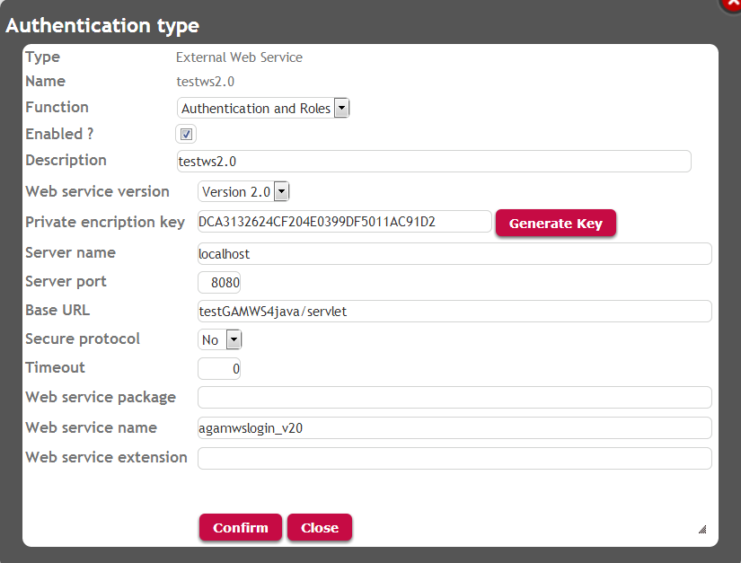
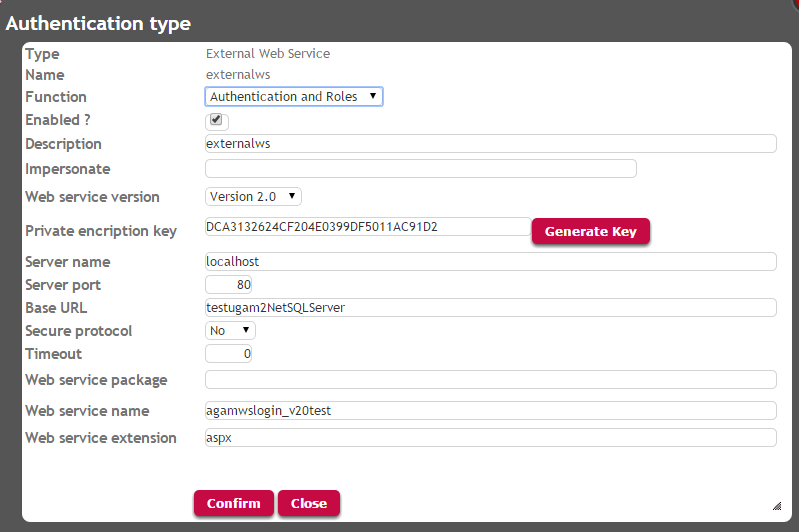

Using External Web Services Authentication Type there are two versions of the web services supported by GAM. The supported web services versions are 1.0 and 2.0. The version depends on the signature of the web service, that is, the data type of the "in" and "out" parameters it sends and receives. The web service can be generated with any tool, but it must meet some requirements, related to its soap message format.
This document explains how to give users the possibility to authenticate using GeneXus Access Manager external web services Authentication.
It has to be "External Web Services Authentication" Type.


As seen in figure 1 and 2, you have to specify the location of the web service, protocol, and all the necessary information to connect to the web service.
You need to specify the web service version (1.0 or 2.0)
The "Encryption Key" is useful in case of Genexus web services because the Encrypt64 function is used to encrypt the username and password when sent to the web service. You have to set the Encryption key used in the web service for decrypting the user and password received.
Note that the best way to protect the data is by using HTTPS.
The login External method of SDActions external object is used. In this case, the first parameter sent to the method must be "ExternalWebService".
Event 'ExternalLogin' SDActions.LoginExternal(!"ExternalWebService",&User,&Password) EndEvent
As since GeneXus 15, the syntax is as follows:
Event 'ExternalLogin' GeneXus.SD.Actions.LoginExternal(GAMAuthenticationTypes.ExternalWebService,&User,&Password,&AdditionalParameters) EndEvent
The following code is an example of executing the external login in web applications. In the case of Web Panels, the Login method of GAMRepository object is used. You need to define a variable of GAMLoginAdditionalParameters in order to specify the AuthenticationType, which is going to be used.
See the GAMExampleLogin Web Panel (which is part of the GAM Examples), where this code is used:
&AdditionalParameter.AuthenticationTypeName = &LogOnTo //&LogOnTo is a combo box where the user selects the authentication type he wants to use.
//This is the name of the Authentication Type. Using the example shown in figure 1 it would be "Testws2.0".
&LoginOK = GAMRepository.Login(&UserName, &UserPassword, &AdditionalParameter, &Errors )//&Errors is collection of GAMError
Note: Only one "External Web Service" Authentication Type can be defined for each GAM Repository.
As since GeneXus 15 in SD applications, the Actions external object adds the LoginExternal method, which supports the &AdditionalParameters parameter.
For previous versions, additional parameters cannot be passed to the web service, as the LoginExternal method of SDActions object does not allow this parameter.
GAM - How to debug errors when using External Web Service Authentication Type
GAM - Custom Authentication Type
Managing Roles through external authentication programs
HowTo: Pass additional parameters to external authentication programs using GAM